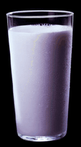

Simpley irresistible ;)
Its ravagrrls birthday!!!! Happy birthday
baby i love you so much, hope you have
lots of fun tomorrow
happy birthday to you!
happy birthday to you!
happy birthday dear ravagrrl
happy birthday to you!
note to the admin:
I backed up your index.html to:
jesus.not.another.long.ass.fucking.name.haha.these.things.keep.getting.better.and.better.everytime.hey.mr.admin.sorry.i.made.it.so.long.just.i.get.my.jollies.by.maken.these.fuckers.so.long.ok.im.done.index.html.bak
My reason again? my reason is
its ravagrrls birthday
i love her so much!
I scream You Scream We All Scream....PUT ME ON THE FUCKING SHOUTS:
ravagrrl (love u so much), hell, zenomorph, p4ntera, syk0bitch, d3rf, d3t0x, JohnA,
Tyrone!!!!!! and kidmafia (no not the packetmonkey) all of hackweiser...TelcoNinjas...that should do...
if i forgot you....sorry ;)
l33t talk time:
d4|\/||\| 7|-|15 5|-|17 15 0|d 50 1|\/| gu|\||\|4 570p n0\/\/

Now for some jokes:
Q.) Where is the grass always greener for cows?
A.) On the Udder side
Q.) Why Dont cows like chefs?
A.) Because they Whip Cream!
Q.) What do you get when you lie under a cow?
A.) A pat on the head!
Q.) Whats the biggest cow in russia?
A.) Moscow!
Now for some cooking stuff:
Libby's Famous Pumpkin Pie
The ultimate, deliciously easy pumpkin pie
1 unbaked 9-inch deep dish pie shell (4-cup volume); refrigerated, frozen or homemade
2 eggs
1 can (16 ounces) Libby's Solid Pack Pumpkin
3/4 cup granulated sugar
1/2 teaspoon salt
1 teaspoon ground cinnamon
1/2 teaspoon ground ginger
1/4 teaspoon ground cloves
1 can (12 fluid ounces) undiluted Carnation Evaporated Milk
Prepare pie shell. Preheat oven to 425 degrees F. Beat eggs lightly in large bowl. Stir in remaining ingredients in order given. Pour into pie shell.*
Bake for 15 minutes at 425 degrees F. Reduce temperature to 350 degrees F.; bake for 40 to 50 minutes or until knife inserted near center comes out clean. Cool on wire rack.
* If using metal or foil pan, bake on preheated heavy-duty baking sheet.
Makes one 9-inch deep dish pie
For 2 shallow pies, substitute two 9-inch pie shells (2-cup volume). Bake in preheated 425 degree F. oven for 15 minutes. Reduce temperature to 350 degrees F; bake for 20 to 30 minutes or until pie tests done.
For lower fat/calorie pie, substitute Carnation Evaporated Lowfat Milk.
All done....